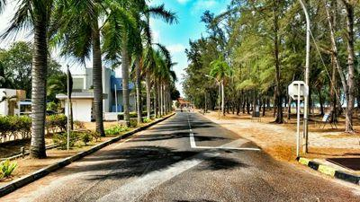

| ♡ | ♡ |
|---|---|
| Primary school | Sekolah Kebangsaan Kulim (SKK) |
| Secondary school | Sekolah Menengah Dato' Mahmud Paduka Raja (2) (SMKDMPR2) |
| Diploma in Office Management and Technology | Uitm Cawangan Terengganu Kampus Dungun |
| Degree in Business Management Faculty of Marketing | UiTM Kelantan Kampus Kota Bharu |
| CGPA (diploma) | 3.21 |
